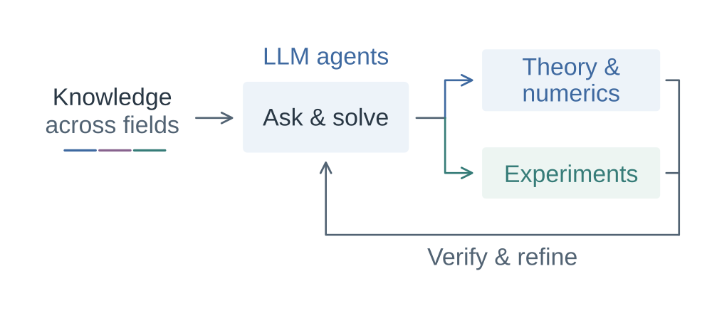
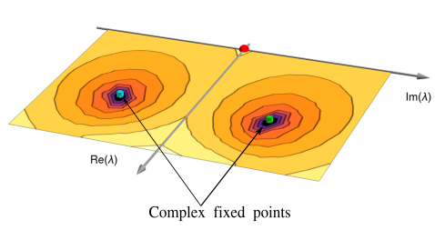
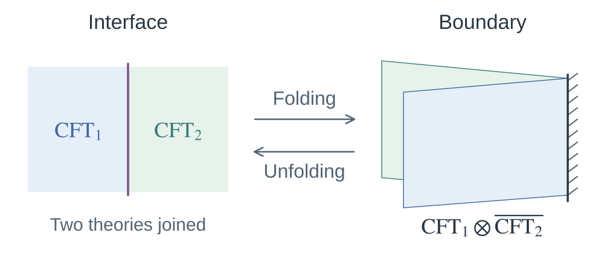
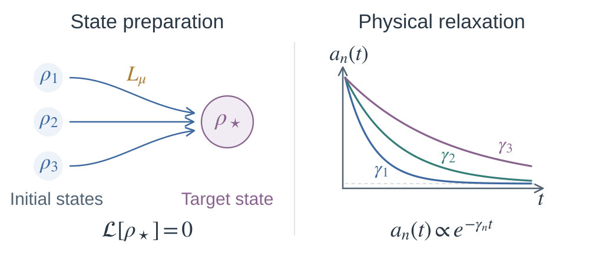
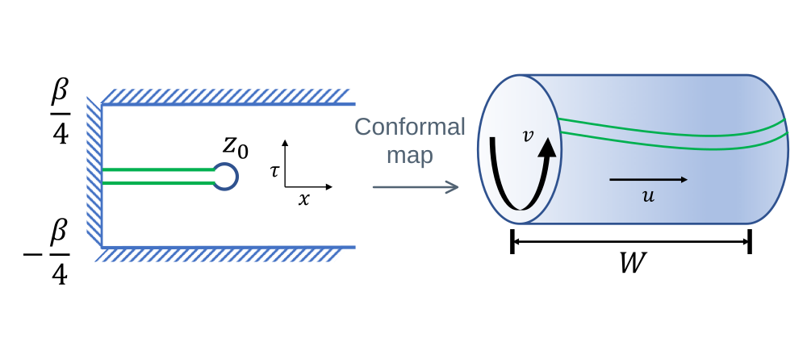
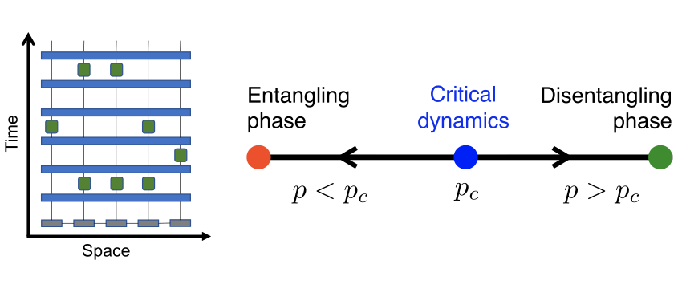
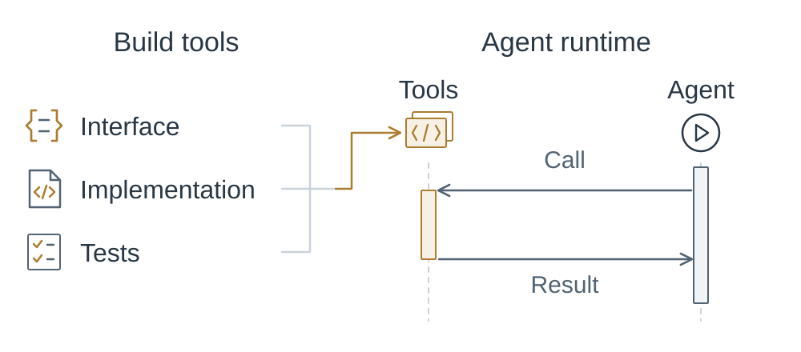

Projects
Quantum many-body physics and autonomous research.
-

Automata for Physics
Research agents that connect knowledge across fields with theory, computation, experiments, and verification.
-

Figure sources
Fig. 1(b). Yin Tang, Han Ma, Qicheng Tang, Yin-Chen He, W. Zhu. Reclaiming the Lost Conformality in a Non-Hermitian Quantum 5-State Potts Model. Physical Review Letters 133, 076504 (2024). Panel (b) selected from the original figure PDF and converted to SVG, preserving its embedded raster content. Outer whitespace trimmed and the panel label removed.
Non-Hermitian fixed points
Microscopic realizations and universal structures of non-Hermitian bulk, boundary, and interface fixed points.
-

Boundary & interface CFTs
Conformal boundaries and interfaces through their spectra, entanglement, and the symmetries they preserve or break.
-

Dissipative quantum dynamics
State preparation, solvable operator dynamics, and relaxation in open quantum many-body systems.
-
![An original schematic of quenched bond and on-site disorder beside the Majorana-pairing figure of Nahum and Skinner (2020). In a flat spatial network, blue bonds vary strongly in thickness and shade to show random coupling strengths. Equal-size flat ochre squares vary in shade to show random local terms, while identical small dark points mark the sites. This is one fixed illustrative realization, with no time direction or atomic spheres. In the reproduced panel, Fig. 15(a) shows short- and long-range Majorana pairs on a fixed two-dimensional lattice under random pair measurements. The panels show complementary settings, not a mapping between the models.](../assets/projects/disordered-criticality.svg)
Figure sources
The left panel is an original schematic of quenched disorder. The right panel is reproduced from the reference below.The upper panel is an original schematic of quenched disorder. The lower panel is reproduced from the reference below.
Pairing diagram — Fig. 15(a). Adam Nahum, Brian Skinner. Entanglement and dynamics of diffusion-annihilation processes with Majorana defects. Physical Review Research 2, 023288 (2020). Used under CC BY 4.0. Pairing diagram reproduced with the (a) label removed. It shows a fixed 2D Majorana lattice under random measurements, without annihilation.
Randomness & quantum criticality
How static disorder and randomness in time evolution change quantum criticality, correlations, and entanglement.
-

Figure sources
Fig. 1. Qicheng Tang, W. Zhu. Critical Scaling Behaviors of Entanglement Spectra. Chinese Physics Letters 37, 010301 (2020); arXiv:1911.03125v1. Original vector panels from Fig. 1, proportionally scaled and rearranged for desktop and mobile layouts. The geometries and original labels are unchanged.
Entanglement spectra & Hamiltonians at criticality
What entanglement spectra and Hamiltonians reveal about criticality beyond the scaling of entropy.
-

Figure sources
Circuit — Fig. 1(a). Qicheng Tang, W. Zhu. Measurement-induced phase transition: A case study in the nonintegrable model by density-matrix renormalization group calculations. Physical Review Research 2, 013022 (2020). Used under CC BY 4.0. Circuit panel cropped from the original figure PDF, omitting the panel label and the separate phase diagram in panel (b). Combined with the phase diagram from Skinner et al. and converted to SVG with lettering preserved as paths.
Phase diagram — Fig. 1. Brian Skinner, Jonathan Ruhman, Adam Nahum. Measurement-Induced Phase Transitions in the Dynamics of Entanglement. Physical Review X 9, 031009 (2019). Used under CC BY 4.0. Original phase diagram combined with the circuit panel from Tang and Zhu; converted to SVG with lettering preserved as paths.
Monitored dynamics & emergent phases
Phases and critical behavior generated by monitoring, and what measurement records reveal about quantum dynamics.
-

Numerics for quantum many-body systems
Numerical approaches to model systems and materials, using exact diagonalization, tensor networks, and density-functional theory.
-

Agent tools & infrastructure
Software for reliable tool use by AI agents, from data exchange to execution and verification.
![An original schematic of quenched bond and on-site disorder beside the Majorana-pairing figure of Nahum and Skinner (2020). In a flat spatial network, blue bonds vary strongly in thickness and shade to show random coupling strengths. Equal-size flat ochre squares vary in shade to show random local terms, while identical small dark points mark the sites. This is one fixed illustrative realization, with no time direction or atomic spheres. In the reproduced panel, Fig. 15(a) shows short- and long-range Majorana pairs on a fixed two-dimensional lattice under random pair measurements. The panels show complementary settings, not a mapping between the models.](../assets/projects/disordered-criticality-mobile.svg)